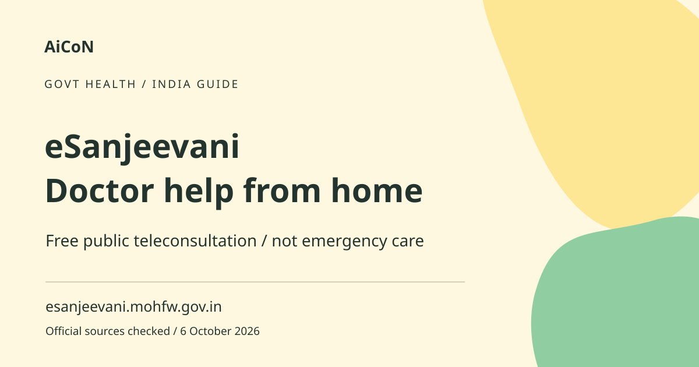

eSanjeevani: free online doctor help in Kerala
eSanjeevani is the Health Ministry's National Telemedicine Service. Patient OPD consultations connect people with doctors remotely, without a consultation fee. Clinic availability and the current on-screen registration process matter. It is not an emergency service.

What are the two kinds of service?
Patient-facing OPD is an outpatient consultation accessed remotely. The assisted model connects health facilities and their providers with hub doctors or specialists. These are different routes. A provider-facing app is not necessarily the right app for a patient at home. Start from the official patient route instead of choosing a similarly named store result.
When an online consultation is suitable
A remote consultation can help with non-emergency questions and follow-up, but the doctor decides whether enough information is available. Video cannot replace every physical examination, diagnostic test or procedure. Do not delay urgent in-person treatment while waiting for an online token. If you are uncertain whether symptoms are urgent, seek prompt professional help through an appropriate local service.
How to use it, step by step
- Open esanjeevani.mohfw.gov.in directly or use an official Health Department link. Select the patient OPD route shown in the current service.
- Check Kerala clinic availability and today's displayed hours. General and specialist clinics may have different schedules.
- Have your phone available for any OTP and use your own valid patient information. Never tell an unrelated caller your verification code.
- Follow the current registration and token instructions. An older ministry explanation describes registration, a token, a notification and a waiting area; labels may have changed.
- Prepare a short symptom history, current medicines, allergies and relevant reports. Upload only what the doctor needs through the official interface.
- Test your camera, microphone and connection. Wait in the required queue and join when the consultation is offered.
- Explain the problem clearly and ask what to do next. Mention if you cannot understand an instruction or if an in-person visit is difficult.
- Save any e-prescription securely. Follow the doctor's advice about examination, tests or referral and check the prescription if any detail seems unclear.
Kerala clinic hours: check before joining
The checked Kerala National Health Mission page lists General OPD Monday to Sunday, 8 am to 8 pm, with separate schedules for several specialist services. A published schedule is not proof that a clinician is currently available. Check the live clinic list and queue. Older state pages contain dated statistics and timings, so this guide does not promise a fixed wait time or guaranteed specialist slot.
What is free and what may cost separately?
The ministry describes public eSanjeevani OPD teleconsultations as free. Do not pay an intermediary for an alleged consultation token or priority slot. Internet data, later tests, medicines and care outside the platform are separate and may carry charges. A free consultation does not mean all follow-up treatment is free everywhere.
Prescriptions and medical follow-up
An e-prescription is a medical instruction issued by the consulting doctor, not an automatically generated treatment plan. Confirm the patient name, medicine, dose and duration before following it. If unclear, ask the clinician or pharmacist instead of guessing. Do not copy another person's prescription or use an old prescription for a new illness without advice.
Privacy and help for family members
Health reports and prescriptions contain sensitive information. Use the official service, a private space and a device you trust. Avoid sending reports into public groups for help with registration. If assisting a relative, obtain their agreement and use their accurate details. Let them explain symptoms when possible rather than silently answering on their behalf.
If the portal or queue does not work
Check your connection and the clinic's current schedule, then follow the site's own support route. Do not install remote-control software or pay a caller who claims to fix the token. If symptoms require timely care, use an appropriate local facility rather than repeatedly waiting on an unavailable online service. Remote availability is not a safety guarantee.
Frequently asked questions
Is a consultation free?
The public OPD service is described as free. Follow-up services and medicines may cost separately.
Can I use it for an emergency?
No. Seek appropriate urgent in-person care.
Is an online doctor always available?
No. Check clinic hours, availability and the current queue.
Is every eSanjeevani app for patients?
No. Some interfaces are for assisted provider consultations. Use the official patient route.
Official sources
- Official National Telemedicine Service
- Kerala National Health Mission service page
- Health Ministry patient-process announcement
Checked 6 October 2026. Expanded from an AiCoN short post delivered 6 October 2026. Portal screens and rules can change.